Any place on Earth in 3D, from open data.
Pick a place, turn it into a light 3D map built only from open data, then fly a drone over it or walk its streets, all in your browser. No account, no API key, no install.
In France it uses IGN's measured buildings, 1 m terrain and 20 cm aerial photos; elsewhere OpenStreetMap, the sharpest elevation model available (USGS lidar in the US, GSI 5 m in Japan, worldwide tiles elsewhere) and the sharpest aerial photos (national programmes in Switzerland, the Netherlands, Austria, Spain and Japan, Esri World Imagery everywhere else). The place you build stays in your browser: nothing is uploaded.
Urban Geo Analytics is an independent research and consulting practice focused on geospatial modelling, AI for cities and open-source urban analytics: Spatial Analysis, GeoAI & Machine Learning. OpenGeoWorld sits next to its other open tools for urban research, such as SAGAI (streetscape analysis with generative AI), UVLM (a loader for vision-language models) and RUE (render urban edits).
urbangeoanalytics.com ↗
The code is open source under the MIT License. The 3D engine and tools come from oncyber's awe engine (MIT). The photo facade library (walls, shopfronts, roofs) was generated for this project and is released with it, under MIT or CC0. The avatar, its animations and the drone are generated in code.
The credits for the data actually used are written into each downloaded GLB.
three.js (MIT), MapLibre GL JS (BSD-3-Clause), Rapier physics (Apache-2.0), three-vrm (MIT), Next.js (MIT). Fonts: Inter and Michroma, SIL Open Font License 1.1.
OpenGeoWorld is made by Urban Geo Analytics. Need a custom version for your city or organisation, your own data in it, a training or a research collaboration? Get in touch.
Contact Urban Geo Analytics ↗ urbangeoanalytics.com